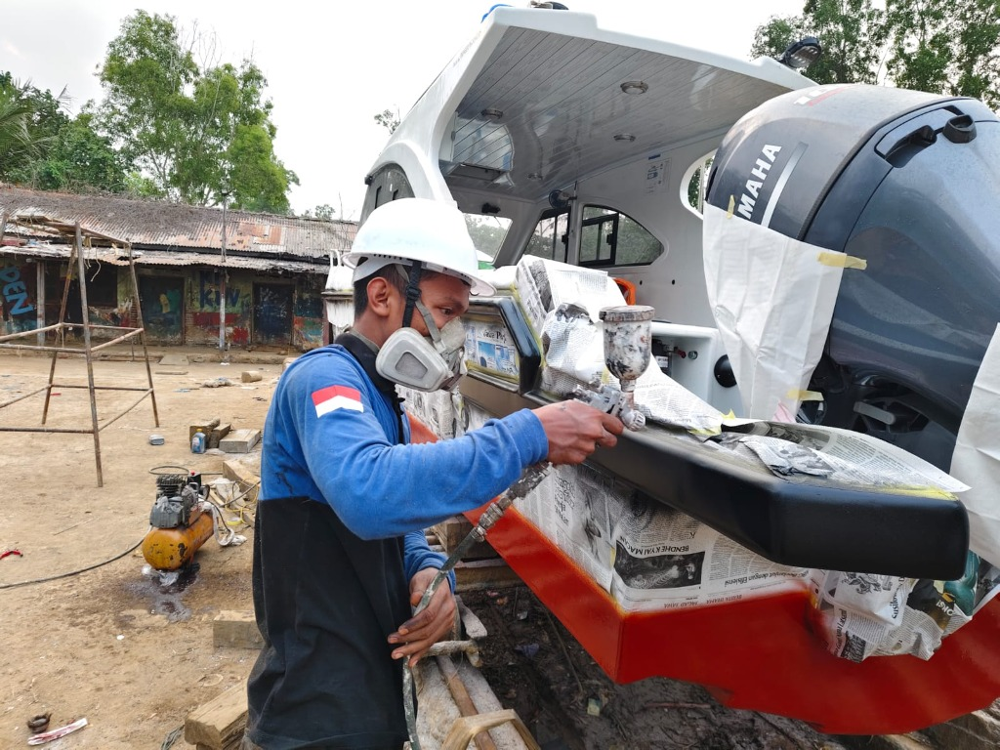
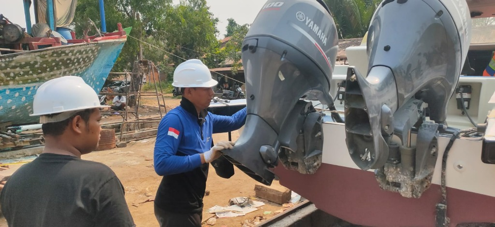

Galeri Dokumentasi Proyek &
Aktivitas Workshop Memey Marine
Rekam jejak visual otentik aktivitas teknisi bersertifikat PT Aillena Marine Indonesia: mulai dari pembongkaran & overhauling mesin tempel Yamaha, pengangkatan gearcase lower unit, perbaikan bodi komposit fiber, pengecatan antifouling anti-teritip di jalur rel muara, hingga uji coba kelayakan operasional laut di Semarang.

Pengecatan BodiPengecatan Presisi & Rekondisi Bodi Speedboat
Teknisi PT Aillena Marine Indonesia mengaplikasikan cat maritim menggunakan alat semprot bertekanan (*paint spray gun*) dengan perlengkapan K3 (helm keselamatan & respirator) pada bodi speedboat bermesin ganda.
 Antifouling Lambung
Antifouling Lambung
Pelapisan Cat Antifouling Anti-Teritip di Jalur Rel
Proses pengecatan lapisan bawah lambung kapal menggunakan cat *marine antifouling* merah berkualitas di atas bantalan rel kereta luncur muara untuk mencegah penempelan teritip laut dan tiram.
 Lower Unit Propeller
Lower Unit Propeller
Pemasangan & Kalibrasi Lower Unit Mesin Tempel
Mekanik berseragam resmi "Aillena Marine Indonesia" melakukan pengangkatan, pengecekan seal oli gearcase, dan pemasangan kembali unit baling-baling stainless steel pada mesin tempel Yamaha.
 Twin Yamaha 100HP
Twin Yamaha 100HP
Overhaul & Penyetelan Mesin Kembar Yamaha 100 4-Tak
Dua orang teknisi ahli memeriksa keselarasan sistem transmisi, kemudi, dan mekanisme tilt hidrolik pada sepasang mesin tempel Yamaha Four Stroke 100 HP di buritan kapal.

Quality ControlInspeksi Teknis & Quality Control Mesin Tempel
Pemeriksaan pra-Sea Trial untuk memastikan sistem kelistrikan, sirkulasi pendingin air laut, dan baut dudukan transom terpasang kokoh sesuai buku panduan standar pabrikan.